소방설비산업기사(전기) (2019-04-27 기출문제)
1과목: 소방원론
1. 다음 중 인화점이 가장 낮은 물질은?
- 등유
- 아세톤
- 경유
- 아세트산
(정답률: 67%)

2. 건물화재에서 플래시 오버(flash over)에 관한 설명으로 옳은 것은?
- 가연물이 착화되는 초기 단계에서 발생한다.
- 화재시 발생한 가연성 가스가 축적되다가 일순간에 화염이 실 전체로 확대되는 현상을 말한다.
- 소화활동이 끝난 단계에서 발생한다.
- 화재시 모두 연소하여 자연 진화된 상태를 말한다.
(정답률: 89%)
3. 소화약제에 대한 설명 중 옳은 것은?
- 물이 냉각효과가 가장 큰 이유는 비열과 증발잠열이 크기 때문이다.
- 이산화탄소 순도가 95.0% 이상인 것을 소화약제로 사용해야 한다.
- 할론 2402는 상온에서 기체로 존재하므로 저장 시에는 액화시켜 저장한다.
- 이산화탄소는 전기적으로 비전도성이며 공기보다 3배 정도 무거운 기체이다.
(정답률: 82%)
4. 다른 곳에서 화원, 전기스파크 등의 착화원을 부여하지 않고 가연성 물질을 공기 또는 산소 중에서 가열함으로서 발화 또는 폭발을 일으키는 최저온도를 나타내는 용어는?
- 인화점
- 발열점
- 연소점
- 발화점
(정답률: 68%)
5. 0℃의 얼음 1g이 100℃의 수증기가 되려면 약 몇 cal의 열량이 필요한가? (단, 0℃ 얼음의 융해열은 80 cal/g 이고, 100℃ 물의 증발잠열은 539 cal/g 이다.)
- 539
- 719
- 939
- 1119
(정답률: 81%)
6. 이산화탄소 소화약제가 공기 중에 34 vol% 공급되면 산소의 농도는 약 몇 vol% 가 되는가?
- 12
- 14
- 16
- 18
(정답률: 65%)
7. 다음 중 황린의 완전 연소시에 주로 발생되는 물질은?
- P2O
- PO2
- P2O3
- P2O5
(정답률: 72%)
8. 식용유 화재시 가연물과 결합하여 비누화 반응을 일으키는 소화약제는?
- 물
- Halon 1301
- 제1종 분말소화약제
- 이산화탄소소화약제
(정답률: 73%)
9. 분무연소에 대한 설명으로 틀린 것은?
- 휘발성이 낮은 액체연료의 연소가 여기에 해당된다.
- 점도가 높은 중질유의 연소에 많이 이용된다.
- 액체연료를 수 μm ~ 수백 μm 크기의 액적으로 미립화 시켜 연소시킨다.
- 미세한 액적으로 분무시키는 이유는 표면적을 작게 하여 공기와의 혼합을 좋게 하기 위함이다.
(정답률: 63%)
10. 다음 중 증기밀도가 가장 큰 것은?
- 공기
- 메탄
- 부탄
- 에틸렌
(정답률: 53%)
11. 제3종 분말 소화약제의 주성분은?
- 요소
- 탄산수소나트륨
- 제1인산암모늄
- 탄산수소칼륨
(정답률: 85%)
12. 촛불(양초)의 연소형태로 옳은 것은?
- 증발연소
- 액적연소
- 표면연소
- 자기연소
(정답률: 78%)
13. 부피비가 메탄 80%, 에탄 15%, 프로판 4%, 부탄 1%인 혼합기체가 있다. 이 기체의 공기 중 폭발 하한계는 약 몇 vol% 인가? (단, 공기 중 단일 가스의 폭발 하한계는 메탄 5vol%, 에탄 2vol%, 프로판 2vol%, 부탄 1.8vol% 이다.)
- 2.2
- 3.8
- 4.9
- 6.2
(정답률: 69%)
14. 화재를 소화시키는 소화작용이 아닌 것은?
- 냉각작용
- 질식작용
- 부촉매작용
- 활성화작용
(정답률: 86%)
15. 벤젠 화재 시 이산화탄소 소화약제를 사용하여 소화하는 경우 한계산소량은 약 몇 vol% 인가?
- 14
- 19
- 24
- 28
(정답률: 59%)
16. 소방안전관리대상물에서 소방안전관리자가 작성하는 것으로, 소방계획서 내에 포함되지 않는 것은?(오류 신고가 접수된 문제입니다. 반드시 정답과 해설을 확인하시기 바랍니다.)
- 화재예방을 위한 자체검사계획
- 화새시 화재실 진입에 따른 전술 계획
- 소방시설·피난시설 및 방화시설의 점검·정비계획
- 소방훈련 및 교육계획
(정답률: 70%)
17. 건물 내 피난동선의 조건에 대한 설명으로 옳은 것은?
- 피난동선은 그 말단이 길수록 좋다.
- 모든 피난동선은 건물 중심부 한곳으로 향해야 한다.
- 피난동선의 한쪽은 막다른 통로와 연결되어 화재 시 연소가 되지 않도록 하여야 한다.
- 2개 이상의 방향으로 피난할 수 있으며 그 말단은 화재로부터 안전한 장소이어야 한다.
(정답률: 87%)
18. 탄화칼슘이 물과 반응할 때 생성되는 가연성가스는?
- 메탄
- 에탄
- 아세틸렌
- 프로필렌
(정답률: 77%)
19. 다음 중 연소시 발생하는 가스로 독성이 가장 강한 것은?
- 수소
- 질소
- 이산화탄소
- 일산화탄소
(정답률: 82%)
20. 화재발생시 물을 사용하여 소화하면 더 위험해지는 것은?
- 적린
- 질산암모늄
- 나트륨
- 황린
(정답률: 75%)
2과목: 소방전기회로
21.
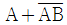
를 간단히 계산한 결과는?- 1
- A
- B
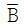
(정답률: 49%)
22. 저항 R인 검류계 G에 그림과 같이 r1인 저항을 병렬로, r2인 저항을 직렬로 접속하고 A, B단자의 사이의 저항을 R과 같게 하고 또한 G에 흐르는 전류를 전전류의 1/n로 하기 위한 r1의 값은?
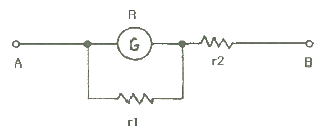
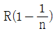
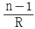
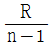
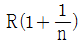
(정답률: 58%)
23. 간선의 굵기를 결정하는 3요소에 포함되지 않는 것은?
- 허용전류
- 전압강하
- 전선의 기계적강도
- 절연내력
(정답률: 60%)
24. 어느 빌딩에서 형광등 32W 125개를 8시간씩 매일 사용한다면 30일 동안 소비한 전력량(kWh)은?
- 960
- 9600
- 96000
- 960000
(정답률: 60%)
25. 100V, 800W, 역률 80%인 회로의 리액턴스(Ω)는?
- 4
- 6
- 8
- 10
(정답률: 50%)
26. 다음 진리표의 논리회로는?
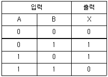
- EXCLUSIVE NOR
- EXCLUSIVE OR
- OR
- AND
(정답률: 63%)
27. 인버터(inverter)에 대한 설명 중 옳은 것은?
- 교류를 직류로 변환시켜 준다.
- 직류를 교류로 변환시켜 준다.
- 저전압을 고전압으로 높이기 위한 장치이다.
- 교류의 주파수를 낮추어 주기 위한 장치이다.
(정답률: 76%)
28. 변류기의 2차전류는 일반적으로 몇 A 인가?
- 2
- 3
- 5
- 8
(정답률: 71%)
29. 3상 농형 유도전동기의 기동방법으로 틀린 것은?
- 전전압 기동법
- Y-△ 기동법
- 2차 저항법
- 기동보상기 기동법
(정답률: 65%)
30. 유전체손이 가장 많은 전선은?
- 고무절연전선
- 케이블
- 석도금절연전선
- 나전선
(정답률: 62%)
31. 구동점 임피던스에 있어서 영점(zero)은?
- 회로를 개방한 것과 같음
- 회로를 단락한 것과 같음
- 전류가 흐르지 않는 경우
- 전압이 가장 큰 상태
(정답률: 60%)
32. 전선에 전류가 흐를 때 생기는 자기장의 방향은, 전류의 방향을 오른나사의 진행방향과 같게 할 때의 오른나사의 회전방향과 같다. 이런 관계를 무엇이라고 하나?
- 키르히호프의 법칙
- 암페어의 오른나사 법칙
- 주울의 법칙
- 패러데이의 법칙
(정답률: 83%)
33. 소방설비의 표시등에 사용되는 발광 다이오드(LED)에 대한 설명으로 틀린 것은?
- 전구에 비해 수명이 길고 진동에 강하다.
- PN 접합에 순방향 전류를 흘림으로써 발광시킨다.
- 표시등 중에서 응답속도가 가장 느리다.
- 발광 다이오드의 재료로 GaAs, GaP 등이 사용된다.
(정답률: 80%)
34. 다음 중 피드백 제어장치에 속하지 않는 요소는?
- 조작부
- 검출부
- 조절부
- 전달부
(정답률: 58%)
35. 교류전압계에서 지시되는 값을 어떤 값 인가?
- 최대값
- 평균값
- 실효값
- 순시값
(정답률: 74%)
36. 전압계의 측정범위를 7배로 하려면 배율기 저항은 전압계 내부저항의 몇 배로 하면 되는가?
- 5
- 6
- 7
- 8
(정답률: 62%)
37. 잔류편차가 있는 제어계로 P 제어라고 하는 것은?
- 비례제어
- 미분제어
- 적분제어
- 비례적분미분제어
(정답률: 69%)
38. RC 직렬회로에서 R = 100Ω, C = 4μF 일 때 e = 220 √2 sin377t (V) 인 전압이 인가되면 합성 임피던스는 약 몇 Ω 인가?
- 0.3
- 1.8
- 66
- 670
(정답률: 45%)
39. 서미스터에 대한 설명으로 옳은 것은?
- 열을 감지하는 감열 저항체 소자이다.
- 온도상승에 따라 저항값이 증가한다.
- 구성은 규소, 아연, 납 등을 혼합한 것이다.
- 화학적으로는 수소화물에 해당된다.
(정답률: 59%)
40. 원자 하나에 최외각 전자가 4개인 4가의 전자로서 가전자대의 4개의 전자가 안정화를 위해 원자끼리 결합한 구조로 일반적인 반도체 재료로 쓰이고 있는 것은?
- Si
- P
- As
- Ga
(정답률: 79%)
3과목: 소방관계법규
41. 위험물안전관리법상 지정수량 미만인 위험물의 저장 또는 취급에 관한 기술상의 기준은 무엇으로 정하는가?
- 대통령령
- 국무총리령
- 시·도의 조례
- 행정안전부령
(정답률: 57%)
42. 화재예방, 소방시설 설치·유지 및 안전관리에 관한 법령상 종합정밀점검을 실시하여야 하는 특정소방대상물의 기준 중 틀린 것은?(관련 규정 개정전 문제로 여기서는 기존 정답인 4번을 누르면 정답 처리됩니다. 자세한 내용은 해설을 참고하세요.)
- 스프링클러설비 또는 물분무등소화설비(호스릴 방식의 물분무등소화설비만을 설치한 경우는 제외)가 설치된 연면적 5000m2 이상이고 11층 이상인 아파트
- 스프링클러설비 또는 물분무등소화설비(호스릴 방식의 물분무등소화설비만을 설치한 경우는 제외)가 설치된 연면적 5000m2 이상인 특정소화대상물(위험물 제조소등은 제외)
- 공공기관 중 연면적이 1000m2 이상인 것으로서 옥내소화전 설비 또는 자동화재탐지설비가 설치된 것(소방대가 근무하는 공공기관은 제외)
- 노래연습장업이 설치된 특정소방대상물로서 연면적이 1500m2 이상인 것
(정답률: 59%)
43. 소방특별조사를 실시할 수 있는 경우로 틀린 것은?
- 화재가 자주 발생하였거나 발생할 유려가 뚜렷한 곳에 대한 점검이 필요한 경우
- 재난예측경보, 기상예보 등을 분석한 결과 소방대상물에 화재, 재난·재해의 발생 위험이 높다고 판단되는 경우
- 화재, 재난·재해 등이 발생할 경우 인명 또는 재산 피해의 우려가 없다고 판단되는 경우
- 관계인이 실시하는 소방시설 등에 대한 자체점검 등이 불성실하거나 불완전하다고 인정되는 경우
(정답률: 79%)
44. 공사업자가 소방시설공사를 마친 때에는 누구에게 완공검사를 받는가?
- 소방본부장 또는 소방서장
- 군수
- 시·도지사
- 소방청장
(정답률: 65%)
45. 화재예방상 필요하다고 인정되거나 화재위험경보시 발령하는 소방신호는?
- 경계신호
- 발화신호
- 해제신호
- 훈련신호
(정답률: 75%)
46. 제조 또는 가공 공정에서 방염처리를 하는 방염대상물품으로 틀린 것은? (단, 합판·목재류의 경우에는 설치 현장에서 방염처리를 한 것을 포함한다.)
- 카펫
- 창문에 설치하는 커튼류
- 두께가 2mm 미만인 종이벽지
- 전시용 합판 또는 섬유판
(정답률: 77%)
47. 소방기본법상 화재의 예방조치 명령으로 틀린 것은?
- 불장난, 모닥불, 흡연, 화기 취급 및 풍등 등 소형 열기구 날리기의 금지 또는 제한
- 타고남은 불 또는 화기의 우려가 있는 재의 처리
- 함부로 버려두거나 그냥 둔 위험물, 그 밖에 불에 탈 수 있는 물건을 옮기거나 치우게 하는 등의 조치
- 불이 번지는 것을 막기 위하여 불이 번질 우려가 있는 소방대상물의 사용 제한
(정답률: 66%)
48. 소방용수실 저수조의 설치기준으로 틀린 것은?
- 지면으로부터의 낙차가 4.5m 이하일 것
- 흡수부분의 수심이 0.3m 이상일 것
- 흡수관의 투입구가 사각형의 경우에는 한 변의 길이가 60cm 이상일 것
- 흡수관의 투입구가 원형의 경우에는 지름이 60cm 이상일 것
(정답률: 68%)
49. 소방기본법령상 소방용수시설 및 지리조사의 기준 중 ㉠, ㉡에 알맞은 것은?
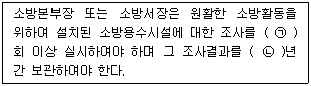
- ㉠ 월 1, ㉡ 1
- ㉠ 월 1, ㉡ 2
- ㉠ 연 1, ㉡ 1
- ㉠ 연 1, ㉡ 2
(정답률: 69%)
50. 위험물 제조소에 환기설비를 설치할 경우 바닥면적이 100m2 이면 급기구의 면적은 몇 cm2 이상이어야 하는가?
- 150
- 300
- 450
- 600
(정답률: 51%)
51. 소방안전관리자를 선임하지 아니한 경우의 벌칙기준은?
- 100만원 이하 과태료
- 200만원 이하 벌금
- 200만원 이하 과태료
- 300만원 이하 벌금
(정답률: 65%)
52. 화재를 진압하고 화재, 재난·재해, 그 밖의 위급한 상황에서 구조·구급 활동 등을 하기 위하여 소방공무원, 의무공무원, 의용소방대원으로 구성된 조직체는?
- 구조구급대
- 소방대
- 의무소방대
- 의용소방대
(정답률: 74%)
53. 다음 ( ) 안에 들어갈 말로 옳은 것은?
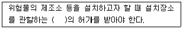
- 행정안전부장관
- 소방청장
- 경찰청장
- 시·도지사
(정답률: 78%)
54. 소방시설공사업법상 지방소방기술심의위원회의 심의사항은?
- 화재안전기준에 관한 사항
- 소방시설의 성능위주설계에 관한 사항
- 소방시설에 하자가 있는지의 판단에 관한 사항
- 소방시설의 설계 및 공사감리의 방법에 관한 사항
(정답률: 52%)
55. 화재예방, 소방시설 설치·유지 및 안전관리에 관한 법령상 방염성능기준으로 틀린 것은?
- 버너의 불꽃을 제거한 때부터 불꽃을 올리며 연소하는 상태가 그칠 때까지 시간은 20초 이내
- 버너의 불꽃을 제거한 때부터 불꽃을 올리지 아니하고 연소하는 상태가 그칠때까지 시간은 30초 이내
- 탄화한 면적은 50cm2 이내, 탄화한 길이는 20cm 이내
- 불꽃에 의하여 완전히 녹을 때까지 불꽃의 접촉횟수는 2회 이상
(정답률: 61%)
56. 피난시설 및 방화시설에서 해서는 안 될 사항으로 틀린 것은?
- 피난시설, 방화구획 및 방화시설을 패쇄하거나 훼손하는 등의 행위
- 피난시설, 방화구획 및 방화시설을 유지·관리하는 행위
- 피난시설, 방화구획 및 방화시설의 주위에 물건을 쌓는 행위
- 피난시설, 방화구획 및 방화시설의 용도에 장애를 주는 행위
(정답률: 81%)
57. 화재예방, 소방시설 설치·유지 및 안전관리에 관한 법령상 소방용품으로 틀린 것은?
- 시각경보기
- 자동소화장치
- 가스누설경보기
- 방염제
(정답률: 39%)
58. 소방시서공사업법상 특정소방대상물의 관계인 또는 발주자로부터 소방시설공사 등을 도급 받은 소방시설업자가 제3자에게 소방시설공사 시공을 하도급할 수 없다. 이를 위반하는 경우의 벌칙기준은? (단, 대통령령으로 도급받은 소방시설공사의 일부를 한 번만 제3자에게 하도급할 수 있는 경우는 제외한다.)
- 100만원 이하의 벌금
- 300만원 이하의 벌금
- 1년 이하의 징역 또는 1000만원 이하의 벌금
- 3년 이하의 징역 또는 1500만원 이하의 벌금
(정답률: 63%)
59. 제4류 위험물에 속하지 않는 것은?
- 아염소산염류
- 특수인화물
- 알코올류
- 동식물유류
(정답률: 70%)
60. 소방시설 중 경보설비에 속하지 않는 것은?
- 통합감시시설
- 자동화재탐지설비
- 자동화재속보설비
- 무선통신보조설비
(정답률: 64%)
4과목: 소방전기시설의 구조 및 원리
61. 무선통신보조설비를 구성하는 기기에 해당하지 않는 것은?
- 혼합기
- 중계기
- 분파기
- 분배기
(정답률: 61%)
62. 누전경보기의 수신부를 설치할 수 있는 장소로 옳은 것은? (단, 누전경보기에 대하여 방호조치를 하지 않은 경우이다.)
- 온도의 변화가 완만한 장소
- 화약류를 제조하거나 저장 또는 취급하는 장소
- 대전류회로·고주파 발생회로 등에 따른 영향을 받을 우려가 있는 장소
- 가연성의 증기·먼지·가스 등이나 부식성의 증기·가스 등이 다량으로 체류하는 장소
(정답률: 75%)
63. 자동화재속보설비의 설치기준에 관한 사항이다. ( ) 안의 ㉠, ㉡에 들어갈 내용으로 옳은 것은?
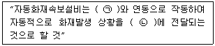
- ㉠ 자동소화설비, ㉡ 종합방재센터
- ㉠ 비상방송설비, ㉡ 소방관서
- ㉠ 비상경보설비, ㉡ 종합방재센터
- ㉠ 자동화재탐지설비, ㉡ 소방관서
(정답률: 73%)
64. 비상방송설비는 기동장치에 따른 화재신고를 수신한 후 필요한 음량으로 화재발생 상황 및 피난에 유효한 방송이 자동으로 개시될 때까지의 소요시간은 최대 몇 초 이하로 하여야 하는가?
- 5
- 10
- 20
- 30
(정답률: 69%)
65. 시각경보장치의 매 초당 점멸주기는? (단, 시각경보장치의 전원입력단자에서 사용 정격전압을 인가한 뒤, 신호장치에서 작동신호를 보내어 약 1분간 점멸회수의 측정하는 경우이다.)
- 1회 이상 3회 이내
- 2회 이상 5회 이내
- 3회 이상 10회 이내
- 5회 이상 15회 이내
(정답률: 55%)
66. 비상콘센트설비의 전원에 대하여 ( ) 안의 ㉠, ㉡, ㉢에 들어갈 내용으로 옳은 것은?
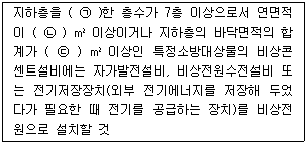
- ㉠ 포함, ㉡ 1000, ㉢ 2000
- ㉠ 포함, ㉡ 2000, ㉢ 3000
- ㉠ 제외, ㉡ 1000, ㉢ 2000
- ㉠ 제외, ㉡ 2000, ㉢ 3000
(정답률: 61%)
67. 공기관식 차동식분포형감지기의 공기관의 노출부분은 감지구역마다 최소 몇 m 이상 되도록 설치하여야 하는가?
- 10
- 20
- 30
- 40
(정답률: 62%)
68. 복도에 설치하는 복도통로유도등의 설치기준으로 옳은 것은?
- 보행거리 15m 마다 설치
- 보행거리 20m 마다 설치
- 수평거리 15m 마다 설치
- 수평거리 20m 마다 설치
(정답률: 58%)
69. 누전경보기에 차단기구를 설치하는 경우 개폐부에 대한 설명으로 틀린 것은?
- 개폐부는 정지점이 명확하여야 한다.
- 개폐부는 원활하고 확실하게 작동하여야 한다.
- 개폐부는 자동으로 개폐되어야 하며 수동으로 복귀되지 아니하여야 한다.
- 개폐부는 수동으로 개폐되어야 하며 자동적으로 복귀하지 아니하여야 한다.
(정답률: 56%)
70. 소방시설용 비상전원수전설비에서 소방회로 전용의 것으로서 분기 개폐기, 분기과전류차단기, 그 밖의 배선용기기 및 배선을 금속제 외함에 수납한 것은?
- 전용분전반
- 전용배전반
- 공용배전반
- 전용수전반
(정답률: 57%)
71. 비상경보설비의 화재안전기준에서 자동식사이렌설비에 대한 설명으로 틀린 것은?
- 지구음향장치는 특정소방대상물의 층마다 설치한다.
- 음향장치는 정격전압의 80% 전압에서 음향을 발할 수 있도록 하여야 한다.
- 자동식사이렌설비는 화재발생 상황을 사이렌 또는 경종으로 경보하는 설비이다.
- 음향장치의 음량은 부착된 음향장치의 중심으로부터 1m 떨어진 위치에서 90dB 이상이 되는 것으로 하여야 한다.
(정답률: 61%)
72. 자동화재탐지설비의 발신기 설치기준에 대한 설명으로 틀린 것은?
- 조작스위치는 바닥으로부터 0.8m 이상 1.5m 이하의 높이에 설치하여야 한다.
- 복도 또는 별도로 구획된 실로서 보행거리가 40m 이상일 경우에는 발신기를 추가로 설치하여야 한다.
- 특정소방대상물의 각 부분으로부터 하나의 발신기까지의 수평거리가 30m 이하가 되도록 하여야 한다.
- 위치표시등의 불빛은 부착면으로부터 15° 이상의 범위 안에서 부착지점으로부터 10m 이내의 어느 곳에서도 쉽게 식별 할 수 있는 적색등으로 하여야 한다.
(정답률: 59%)
73. 무선통신보조설비의 증폭기에 관한 설명으로 틀린 것은?
- 전원은 전기가 정상적으로 공급되는 축전지 또는 교류전압 옥내간선으로 한다.
- 증폭기의 전면에는 주회로의 전원이 정상인지의 여부를 표시할 수 있는 표시등 및 전압계를 설치한다.
- 증폭기라 함은 2개 이상의 입력신호를 원하는 비율로 조합한 출력이 발생하도록 하는 장치를 말한다.
- 증폭기에 부착되는 비상전원의 용량은 무선통신보조설비를 유효하게 30분 이상 작동시킬 수 있는 것으로 한다.
(정답률: 61%)
74. 휴대용비상조명등을 비치하지 않아도 되는 대상물은?
- 숙박시설
- 의료시설
- 영화상영관
- 다중이용업소
(정답률: 53%)
75. 비상콘센트를 보호하기 위한 보호함의 설치기준으로 틀린 것은?
- 보호함 상부에 적색의 표시등을 설치하여야 한다.
- 보호함에는 쉽게 개폐할 수 있는 문을 설치하여야 한다.
- 보호함 표면에 “비상콘센트”라고 표시한 표지를 설치하여야 한다.
- 보호함을 옥내소화전함 등과 접속하여 설치하는 경우에는 옥내소화전합 등의 표시등과 겸용할 수 없다.
(정답률: 70%)
76. 비상방송설비에서 실외에 설치하는 확성기의 음성입력은 최소 몇 W 이상이어야 하는가?
- 0.3
- 0.5
- 1.5
- 3
(정답률: 74%)
77. 자동화재탐시설비에서 감지기 사이의 회로의 배선을 송배전식으로 하고, 감지기회로 말단에 종단저항을 설치하는 이유는?
- 도통시험을 하기 위해서
- 동작시험을 하기 위해서
- 저전압시험을 하기 위해서
- 공통선시험을 하기 위해서
(정답률: 77%)
78. 비상경보설비의 화재안전기준에서 화재발생상황을 단독으로 감지하여 자체에 내장된 음향장치로 경보하는 감지기로 정의되는 것은?
- 자동식감지기
- 가정용감지기
- 단독경보형감지기
- 비상경보형감지기
(정답률: 78%)
79. 다음의 소방설비 중 비상전원의 용량이 최소 10분 이상이 아닌 것은?
- 비상경보설비
- 무선통신보조설비
- 자동화재속보설비
- 자동화재탐지설비
(정답률: 57%)
80. 유도등 비상전원의 용량을 60분 이상의 것으로 설치하여야 하는 특정소방대상물로 틀린 것은?
- 층수가 10층 이하의 층
- 지하층으로서 도매시장
- 무장층으로서 여객자동차터미널
- 지하층을 제외한 층수가 11층 이상의 층
(정답률: 63%)